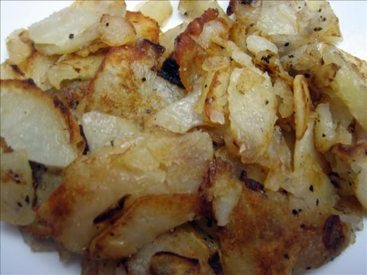

Fried Potato Breakfast

Delicious fried potato recipe
Start your day off right with a pan-fried potato and onions breakfast
Ingredients:
- 4 or 5 red potatoes. Use gold potatoes if you can't find red.
- 1/2 large sweet onion. Any white or yellow onion will do.
- 2 tbsp butter
- 2 tbsp olive oil
- Seasoning to taste
- Optional: bacon grease to simmer the potatoes in
Directions:
- Cut the potaotes lengthwise in half, then again into fourths
- Dice the potaotes as thin as you can. The thinner they are, the quicker they cook.
- Mince 1/2 onion as fine as you can
- Heat a large pan, 10" or 12", on stove on medium heat
- Add olive oil and butter to hot pan
- Add onion to pan, cook until slightly brown and fragrant
- Add diced potatoes to pan, stirring sparingly. Cook until golden brown on each side
- Drop heat to low, add seasonings to taste, and cover with a lid
- Add optional bacon grease to enhance flavors
- Cook until potatoes are soft, serve hot